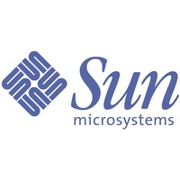

Vida profesional
Estancia en Sun
Gosling estuvo en Sun desde 1984 a 2010 (26 años), su etapa allí fue marcada por el desarrollo del lenguaje de programación Java. Tuvo la idea de la máquina virtual mientras trabajaba en un programa para portear software desde PERQ traduciendo Perq Q-Code a ensamblador VAX. Creó el diseño original de Java y la implementación de su compilador original, así como la máquina virtual. Dejo Sun tras su fusión con Oracle en 2010 citando reducciones en sueldo, estatus y capacidad de decisión.
Vida Posterior
En Marzo de 2011. Gosling entro en Google. 6 meses despues, siguió a su colega Bill Vass y se unio a una statup llamada "Liquid Robotics". A finales de 2016, "Liquid Robotics" fue adquirida por Boeing. Tras la adquisicion, Gosling dejó Liquid Robotics, para trabajar en Amazon Web Services para trabajar con ingeniero, donde esta desde Mayo del 2017